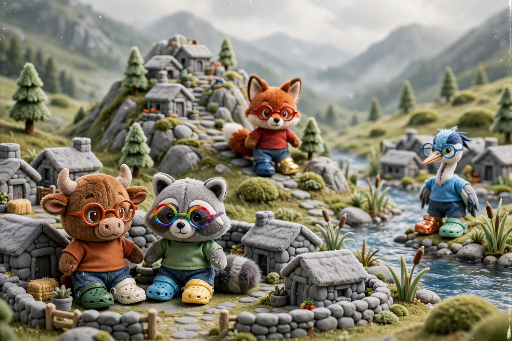
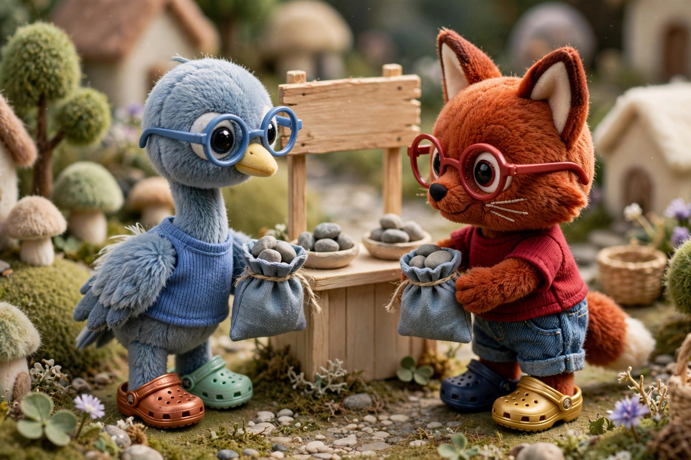
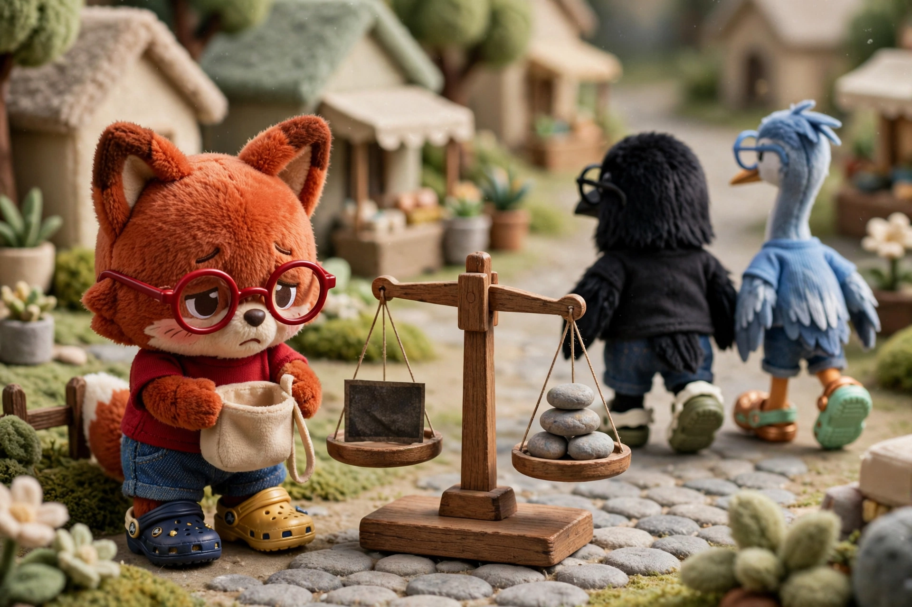

Exchange
Currency

The village has built a financial system that uses special gray stones as money. But over the mountain pass is another village which uses special red stones as money. And over the river is another village which uses special blue stones as money. And so on. In fact, there are many villages in the region, and they each use their locally available special stones as money. In each village, the villagers refer to their stones as simply money, but when discussing money as an idea that transcends all the villages, they refer to special stones as currency.
Trade
The merchant has a problem. The fox’s village is near rich clay deposits and makes excellent pottery, which he wants to bring back to his village to sell. However, the merchant only has gray money, which is not money in the fox’s village. But after some initial bartering, he convinces the merchants in the fox’s village to accept his gray stones as payment. He argues that while gray money is not money to them, it is not worthless either. They can, for example, spend the gray stones in his village when they travel there for business, or they can exchange the gray stones for red stones with other villagers in the fox’s village who plan to travel to the gray village. The fox’s merchants eventually agree, and they sell their pottery for gray stones. But they include a markup on the price, since gray money is inconvenient and must be converted. Over time, all the villages trade with each other. However, trades are limited, because not every merchant wants the inconvenience of being paid in a foreign currency and because imported goods are expensive due to the markup.
Exchange

An entrepreneur notices that many merchants have red stones that they do not want. They trade with the fox’s village because it is worthwhile, but they would prefer to be paid in gray stones. The entrepreneur thinks that the inverse problem must exist in the fox’s village: those merchants must have gray stones that they do not want. And so she forms a business: she buys red stones from the merchant in her village using gray stones, and then she travels over the mountain pass to the fox’s village and buys gray stones with red. The villagers in town start to call her a currency trader. Just as a horse trader specializes in trading horses, the currency trader specializes in trading currencies. The currency trader quotes her price as exchange rate, which reflects her estimate of the relative value of stones in two villages. This rate fluctuates, as the money supply and the prices of goods in both villages slowly drift. And of course, she adds a markup or spread onto this rate for her services. Currency trading is very profitable, and over time, many exchanges pop up. As exchanging currencies becomes easier and cheaper, the villages trade more.
Correspondence
But the currency trader has a problem: transporting stones between villages is dangerous and laborious. So she opens bank accounts in all the villages in the region, and rather than trading stones, she trades banknotes. The banks notice her work and that their customers are often receiving foreign currency, and they wonder: why not simply accept banknotes from other villages and then perform this exchange themselves? Then they could collect a currency exchange fee. A gray merchant could receive a red banknote, deposit it in his local bank, and receive gray deposits in return. His bank would then warehouse the foreign currency and eventually exchange it for gray money. The process could be similar to nightly settlement in a single village. And so the banks open accounts with all the other banks, and they hire currency traders to manage exchange rates and their growing balances of foreign currencies. The bankers call this correspondent banking. And so just as payments between villagers created debts between banks, trade between villages starts creating debts between banking systems.
Exposure
Correspondent banking made trade between villages easier. Now a gray bank could simply accept a red banknote from one of its customers. However, this red banknote was only a promise from a bank in another village. Ultimately, the gray bank needed to know that the fox’s village bank was good for the money. As with nightly settlement, the residual payment between banking systems was typically small. The gray village bought pottery from the fox’s village, while the fox’s village bought cows from the gray village. Money circulated. But the central bankers worried about the political and economic health of the other villages. They thought about their own struggles with inflation and credit squeezes, and wondered what would happen if these happened in another village. There was no central bank above villages. What if another village failed to repay their debts? The gray village could create gray money, but it could not create foreign currency, force a foreign bank to pay its debts, or enforce its laws on foreign bankers. And so as the debts between villages grew, the central bankers monitored the political stability and economic health of their trading partners. They reasoned that a foreign currency was only as good as the village that issued it.
Default

Like other villages, the fox’s village funded itself through taxes. However, the government also funded itself with debt: banks, businesses, and individuals would give the elders money, and the elders would promise to repay the debt with interest. The bankers called these promises bonds. Many people liked to own bonds, because it seemed like a relatively safe way to make interest. However, over many years, the fox’s village borrowed more and more by selling bonds. The village’s debt became very large, and after a few poor harvests, many local businesses struggled and tax payments dwindled. A wealthy lawyer in the fox’s village worried about his government. He worried that his central bank might pay off its bond debt by issuing yet more bonds, this time by creating reserves and selling the new bonds to commercial banks. The debt would roll from public bondholders to commercial banks, and the central bank would pay for this by expanding its balance sheet, by simply creating money. He knew that when this happened, there would be more red money in the system chasing the same amount of goods, and so the fox’s village might experience inflation. So every so often, this lawyer would go the currency trader in town and convert some of his red banknotes to black banknotes, since he thought the crow’s village had the strongest economy. At first, the currency trader was happy to exchange one red banknote for one black banknote. But soon, as the fox’s village experienced inflation, many people in the fox’s village wanted black stones instead of red. The currency trader started demanding two red stones for one black stone, then three, and then four. The fox’s village’s economy continued struggle, because now importing goods was more expensive, since red stones were worth less relative to other currencies. Finally, the fox’s village told the other villages in the region that it would not repay its loans, since it could not risk creating more red money without extreme inflation. The bankers called this a default.
Reserve
During the fox’s village’s debt crisis, no one thought that black stones were completely safe. Rather, many villagers simply preferred to hold black stones rather than red. Like the lawyer, everyone trusted the crow’s village more. This is because the crow’s village, which was high in the mountains, was the wealthiest village by far. It had a strong military, a robust economy, transparent monetary policy, and a fair judicial system. People trusted that black money would retain its value. Over time, black money had simply become the most trusted money in the region, and merchants from all the villages found themselves transacting with black money because everyone had some. When a merchant was offered a black banknote, she would happily accept it; often, she would not even bother taking it to a currency trader to convert it. Like the bookkeeper who thought himself paid when he received a banknote, the merchant thought herself paid when she received black money. She did not think, “This money is better than my money.” She simply didn’t bother to exchange it. And during any sort of financial crisis, people would quickly exchange their domestic money for black money. The central bankers noticed this, and they started to refer to black money as the reserve currency. They used the word “reserve” because, much like central bank reserves, black money acted as a settlement asset, this time between banking systems.